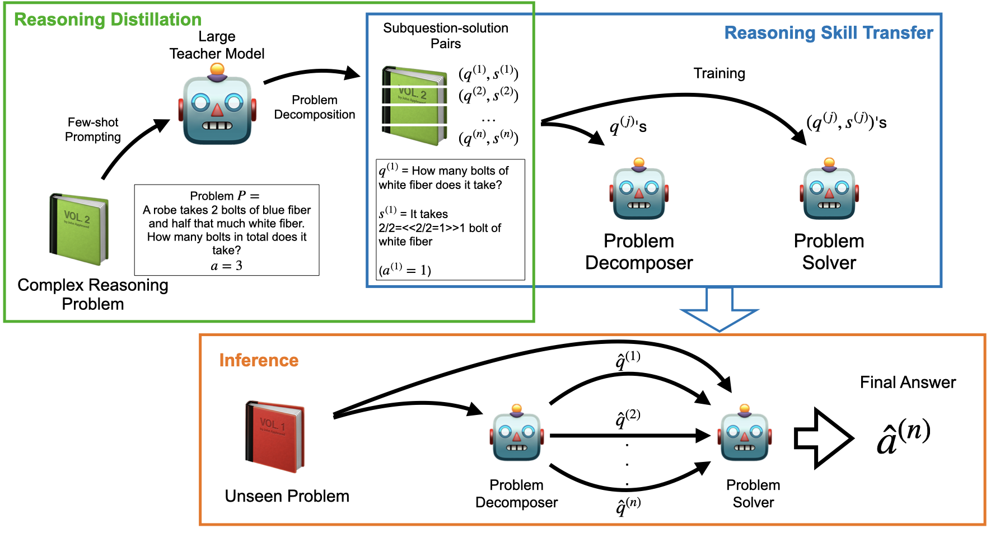

Distilling Reasoning Capabilities into Smaller Language Models
ACL (Findings) '23
Distilling Reasoning Capabilities into Smaller Model
Distillation is a machine learning technique that involves transferring knowledge from a large, powerful model (called the teacher) to a smaller, more efficient model (called the student). This process allows the smaller model to approximate the performance of the larger one while being more computationally efficient. The overall goal is to retain as much of the original model's performance as possible while reducing the complexity of the model.
Reasoning Distillation Framework
Reasoning distillation often used Chain-of-Thought style distillation where distillation allows transferring the reasoning process from large language models (LLMs) to smaller models,
allowing them to handle complex tasks through step-by-step reasoning.
Here's how the CoT-based distillation typically functions:
1. Teacher-Student Framework: A large, pre-trained model (the teacher) is used to generate reasoning chains for various tasks.
These reasoning chains are sequences of intermediate steps that explain how the final answer is derived. This step-by-step process helps make the reasoning explicit,
rather than relying on implicit processing within the model. The smaller model (the student) is then trained to replicate not just the final answers,
but also the intermediate reasoning steps. This helps the smaller model internalize the problem-solving approach used by the larger model.
2. Generating Reasoning Steps:
In cases where datasets do not contain annotated reasoning steps, a large model is used to generate these steps. The model is prompted with a problem and produces a
chain of intermediate steps that lead to the solution. This process involves decomposing complex problems into simpler subproblems, each with its own solution.
These generated steps are then verified to ensure that the final solution matches the ground truth. Only valid reasoning chains are retained for training the student model.
3. Knowledge Distillation Process:
The distillation process involves fine-tuning the smaller student model on the CoT reasoning steps generated by the teacher.
This can be done using standard supervised learning techniques, where the student learns to reproduce both the reasoning steps and the final answer.
Loss functions are typically designed to account for both the correctness of the final answer and the accuracy of the intermediate steps.
This allows the student model to capture the reasoning process in a structured manner.
Socratic CoT (Our proposed approach)

Our Proposed Approach: Socratic Chain of Thought (Socratic CoT)
In this work, we focus on addressing the limitations of current step-by-step reasoning approaches, specifically Chain-of-Thought (CoT), which often require large-scale language models to function effectively. CoT reasoning excels in guiding models through complex tasks by breaking them into intermediate steps, but its effectiveness is closely tied to model size. To overcome this, we propose a knowledge distillation method that transfers CoT reasoning capabilities from large models into smaller, more efficient models using Socratic questioning.
Our approach, Socratic Chain of Thought (Socratic CoT), enhances CoT by breaking down problems into a sequence of subproblems, each paired with a solution. This subquestioning strategy allows smaller models to decompose complex tasks, handle them iteratively, and still perform reasoning tasks at a high level.
We demonstrate two key strategies for distilling reasoning capabilities:
Unified Approach: We train a single student model to generate subquestions and their corresponding solutions simultaneously.
This allows the model to mimic the full reasoning process of the teacher model.
Iterative Approach: We employ two distinct student models, one for generating subquestions and the other for answering them.
This iterative process divides the problem-solving task, with one model progressively breaking down the problem and the other providing solutions for each subproblem.
Results
To train these models, we generate intermediate reasoning steps using large language models (LLMs). Our experimental results show significant improvements—over 70% on reasoning datasets such as GSM8K and StrategyQA compared to baseline models. Notably, we observe that smaller models like GPT-2, when trained using Socratic CoT, can outperform models as large as GPT-3 (6B), demonstrating the effectiveness of our distillation approach.